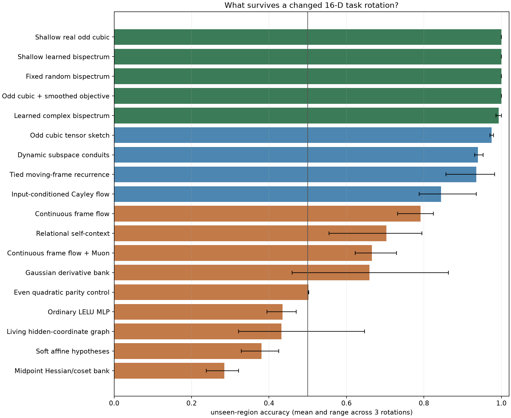

N-D spiral wall screen · three independent rotations
Eighteen mechanisms, 500 CPU steps, one 16-D eight-plane spiral task. Models saw only individual observed-region vectors. The task coordinate, known rotation, harmonic decomposition, neighbors, and future samples were never model inputs.
The surprise is also a diagnosis of the benchmark. The two branches are exact antipodes. Even-order features erase their identity; odd third-order random features expose a global separator. This is genuine extrapolation under the stated generator, but it is not evidence for universal manifold induction. “Parameters” means learned scalars; frozen atlas storage is shown separately.
rotation 0: all 18 manifold plots rotation 1: all 18 manifold plots rotation 2: all 18 manifold plots

| mechanism | observed val | unseen mean | unseen worst rotation | learned scalars | fixed atlas scalars | train mean |
|---|
| Shallow real odd cubic | 1.000 | 1.000 | 1.000 | 2,437 | 0 | 0.24s |
| Shallow learned bispectrum | 1.000 | 1.000 | 1.000 | 4,837 | 0 | 0.64s |
| Fixed random bispectrum | 1.000 | 1.000 | 1.000 | 770 | 18,432 | 0.40s |
| Odd cubic + smoothed objective | 1.000 | 1.000 | 1.000 | 18,652 | 0 | 0.83s |
| Learned complex bispectrum | 1.000 | 0.993 | 0.986 | 22,492 | 0 | 1.17s |
| Odd cubic tensor sketch | 1.000 | 0.975 | 0.970 | 18,652 | 0 | 1.17s |
| Dynamic subspace conduits | 1.000 | 0.940 | 0.931 | 34,382 | 0 | 4.56s |
| Tied moving-frame recurrence | 1.000 | 0.935 | 0.857 | 5,571 | 0 | 0.88s |
| Input-conditioned Cayley flow | 1.000 | 0.845 | 0.788 | 2,210 | 0 | 2.48s |
| Continuous frame flow | 1.000 | 0.792 | 0.732 | 4,454 | 3,472 | 14.06s |
| Relational self-context | 1.000 | 0.703 | 0.555 | 5,006 | 3,456 | 3.81s |
| Continuous frame flow + Muon | 1.000 | 0.666 | 0.623 | 4,454 | 3,472 | 6.50s |
| Gaussian derivative bank | 1.000 | 0.660 | 0.460 | 19,322 | 0 | 0.45s |
| Even quadratic parity control | 0.496 | 0.502 | 0.502 | 6,530 | 0 | 0.32s |
| Ordinary LELU MLP | 0.651 | 0.435 | 0.394 | 2,834 | 0 | 0.20s |
| Living hidden-coordinate graph | 0.984 | 0.432 | 0.322 | 5,762 | 0 | 2.40s |
| Soft affine hypotheses | 1.000 | 0.381 | 0.329 | 15,904 | 0 | 0.92s |
| Midpoint Hessian/coset bank | 0.996 | 0.284 | 0.238 | 12,422 | 0 | 0.76s |
Fixed random bispectrum

Shallow real odd cubic

Continuous frame flow

Relational self-context

Even quadratic parity control

Midpoint Hessian/coset bank